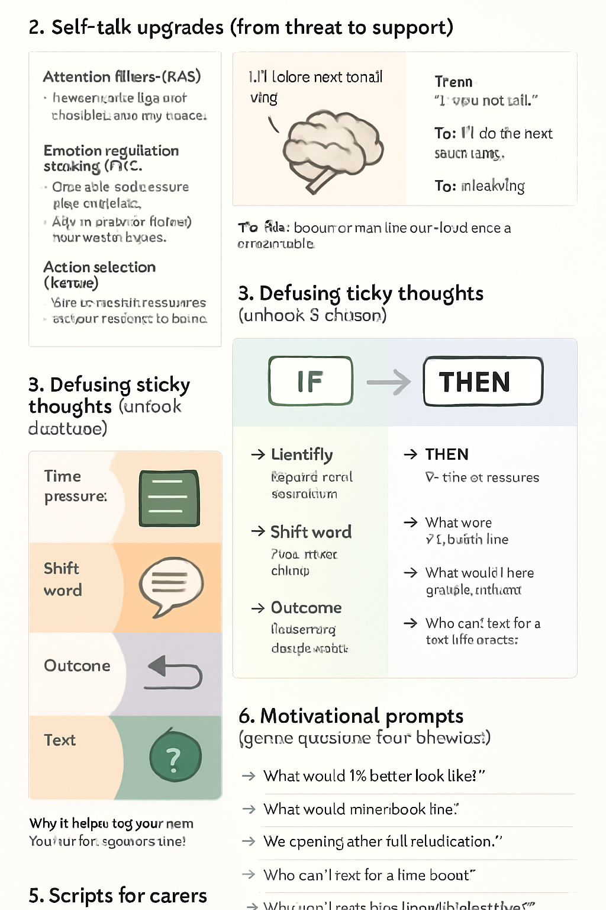
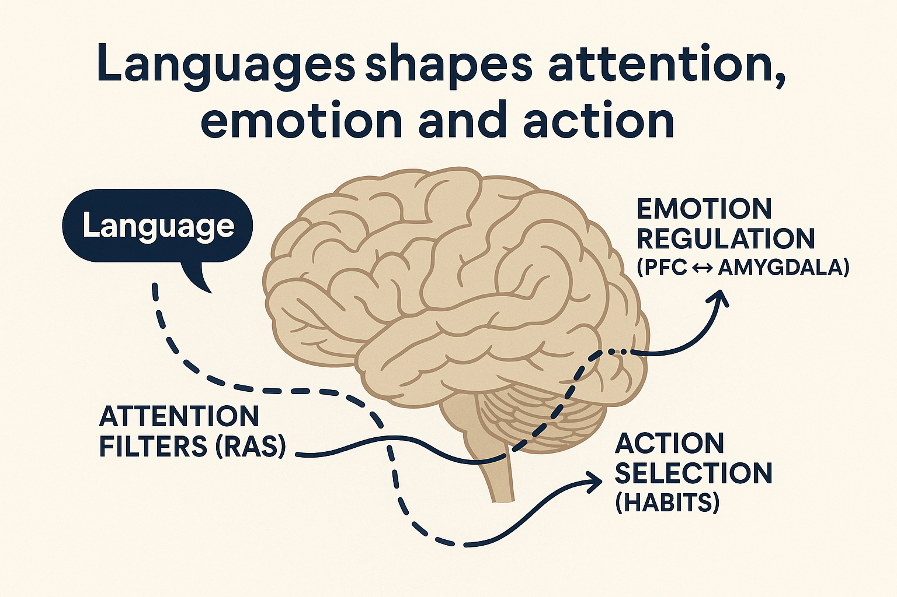
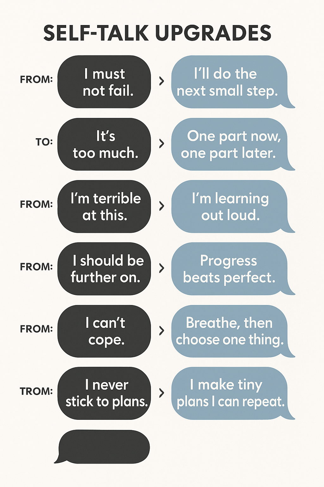

Neurolinguistics: Words That Change How Your Brain Responds
Language steers attention, emotion, and action. The phrases you read, hear, and say can nudge your nervous system
towards calm and momentum — or towards alarm and stuckness. Below you’ll find clear, brain-friendly explanations
and scripts you can use right away.

Missing image: ../img/nl-hero.png
Think of helpful language like a steady hand on your shoulder: kind, specific, and doable.
1) Why language works (the useful brain bits)

Placeholder diagram — save as nl-word-pathways.png.
Attention filters (RAS): Your brain acts like a search engine. Questions like
“What’s the smallest helpful action?” bias you to notice tiny, doable steps.
Emotion regulation (PFC ↔ amygdala): Concrete, compassionate wording
(“One step now.”) lowers the alarm and restores choice.
Action selection (habits): Short, specific sentences are easier to execute and repeat,
reinforcing the circuit you want.
Principle: Prefer near-term, simple, kind language. It fuels the prefrontal cortex and habit loops.
2) Self-talk upgrades (from threat to support)

Placeholder — save as nl-self-talk-swaps.png.
From: “I must not fail.” To: “I’ll do the next small step.”
From: “It’s too much.” To: “One part now, one part later.”
From: “I’m terrible at this.” To: “I’m learning out loud.”
From: “I should be further on.” To: “Progress beats perfect.”
From: “I can’t cope.” To: “Breathe, then choose one thing.”
From: “I never stick to plans.” To: “I make tiny plans I can repeat.”
Why small wording shifts work
Believability ladder: “I am confident” may feel false. Try “I’m learning to back myself.”
The information on this page is for general understanding and support. It is not a substitute
for professional medical, psychological, or legal advice. If you feel unable to keep yourself safe or someone else is at risk,
call 999 (UK) immediately. If you’re outside the UK, contact your local emergency number.
For non-emergency concerns, consider speaking with a qualified health professional or an appropriate support service listed on our Wellbeing pages.
{kind=link}
{kind=link}
{kind=link}